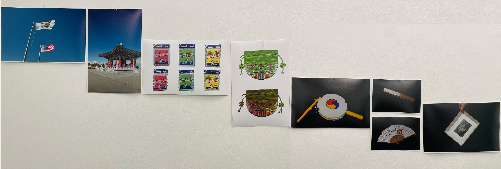
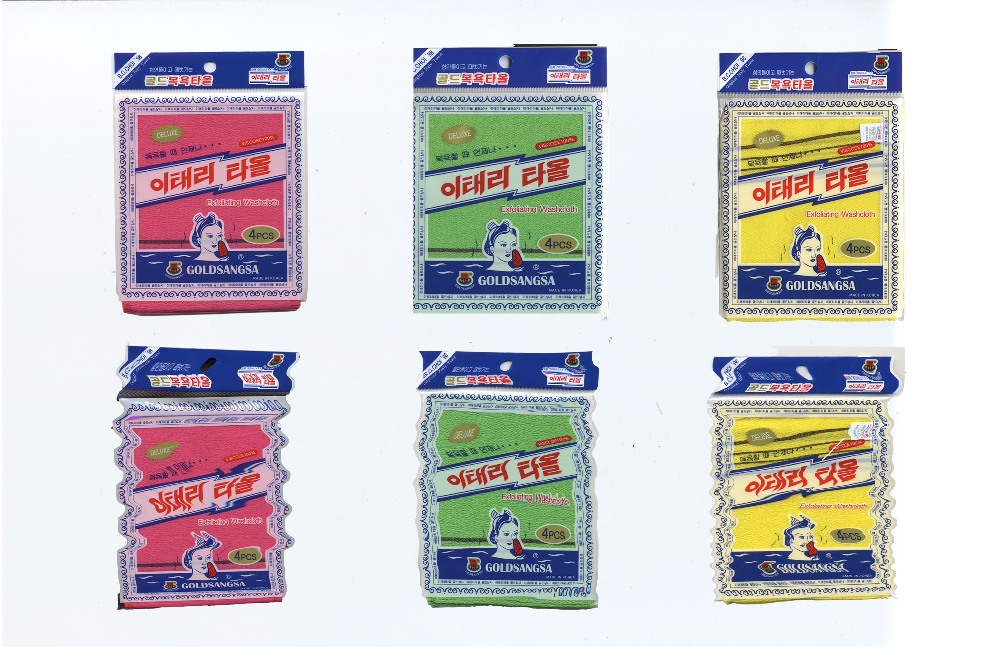
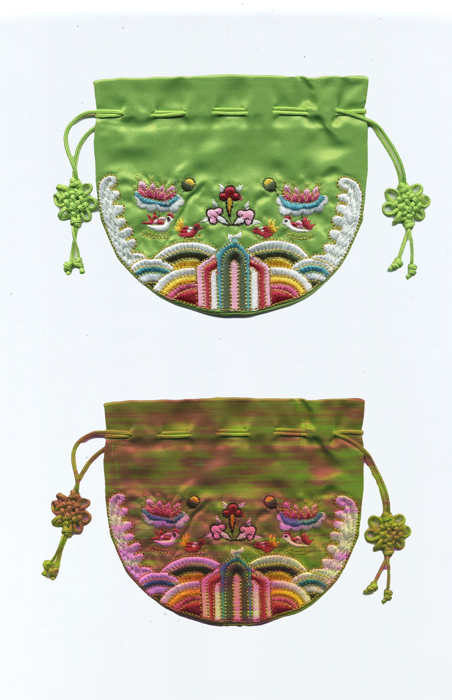
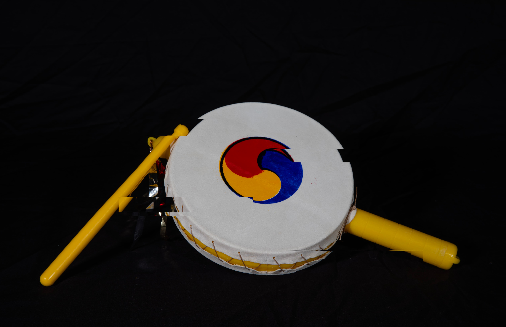
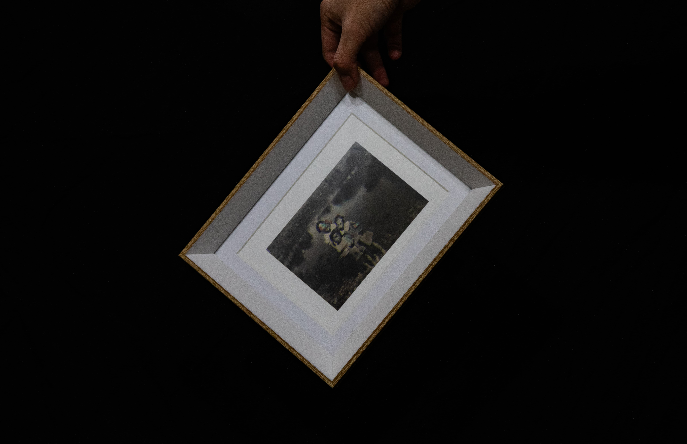
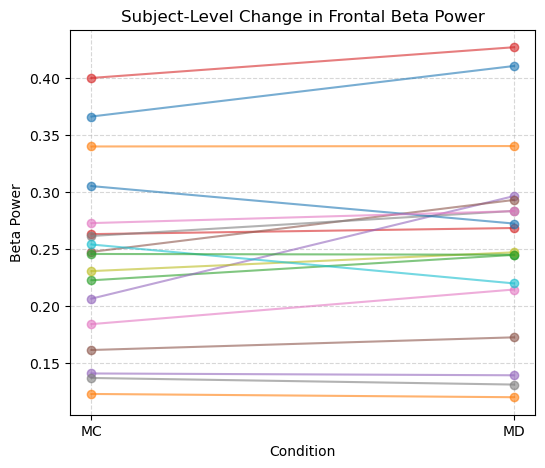
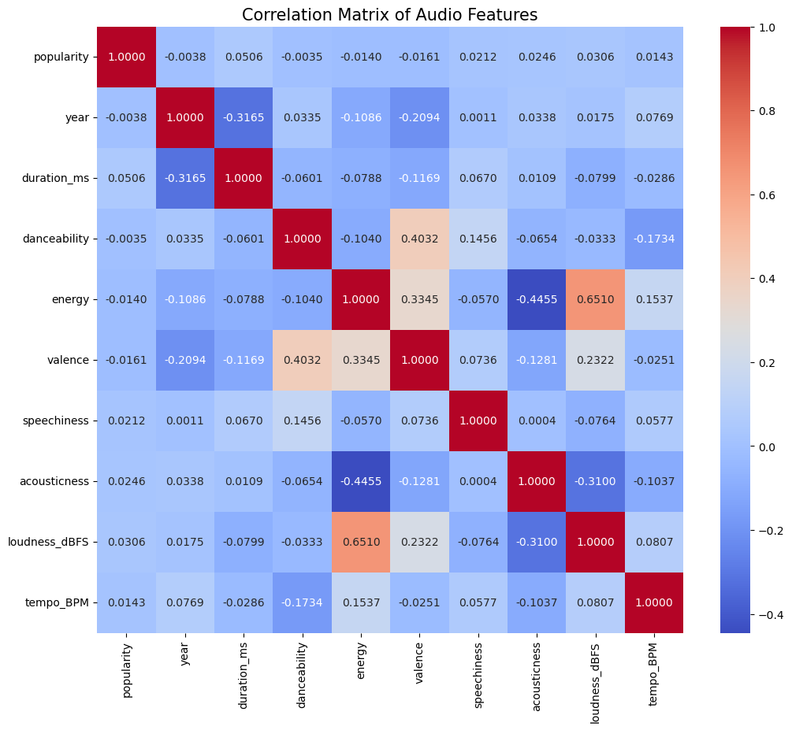

Sediments of Memory
VIS 110A · 2026An interactive installation where you turn a hand crank to slowly light up 20 LED zones. Each zone uses a different colored material to filter the light. Made it to think about how Alzheimer's affects memory — specifically how memory doesn't just disappear, it stays in the body. Shown at Mandeville Gallery, UCSD.
Lost
VIS 164 · 2025 · Gallery ExhibitionFilm photography of Korean objects I used as a kid — exfoliating towel, drum, fan, pouch — photographed with glitch effects. Made as a tribute to my grandfather, who fled North Korea during the Korean War and raised me. He now has Alzheimer's.






Tide Ink
VIS 141B · 2025Pulls live tidal data from 5 California NOAA stations and renders it as flowing particles across a 4×5 screen wall (20 displays). Used MPI to run one process per screen so the whole wall reads as one continuous piece. Tide height controls particle speed, color, and energy.
Linguistic Interference
COGS 189 · 2026Tested whether the type of background music (lyrics you understand vs. foreign lyrics vs. instrumental) affects cognitive load, using EEG. Measured frontal beta and parietal alpha power across 18 participants. The result was a null finding — which is still a finding.

Real-time Pixel Pipeline
VIS 145A · 2025Built a node-based pixel pipeline in TouchDesigner using Goku from Dragon Ball as the source image. Adjusted displacement, contrast, and UV weight in real time to see how far you can push an image before it stops being recognizable.

Predicting Song Popularity
COGS 108 · 2025Tried to predict Spotify popularity from audio features (tempo, energy, danceability, etc.) using 2,000 songs. Turns out audio features barely predict anything — R² near 0 across the board. Ended up being more interesting as a question than an answer.

Auditory Cognition RA
UCSD Lab · 2025–2026RA on a study about how people recognize everyday sounds. Sounds were recorded binaurally (at ear-canal level) to capture realistic spatial audio. I helped design the experiment, run sessions, and clean data.
Decision Paralysis on Streaming Platforms
COGS 13 · 2025Observed 20 people using Netflix in their dorms without telling them what to do. Coded navigation patterns, decision strategies, and how long it took to pick something. Groups took 14.7 min on average; solo viewers 6.3 min. A lot of people just kept going in circles.
Portable Charger Redesign
DSGN 1 · 2025Full UX process on portable chargers — interviewed 8 people, ran a survey of 40, mapped the design space. The main problems were always the same: forgetting the cable, not knowing battery left, and awkward to use while holding your phone. Proposed a redesign with magnetic cable, LED capacity bar, and a grip bracket.
It All Starts When You Are Here
VIS Studio · 2024Shot skateboarders in San Diego on film and edited it into a short moving-image piece. More about the in-between moments than the tricks — just people hanging around a spot.
Close Watch
VIS 70N · 2024 · ProducerProduced a short thriller. A guy insists on walking a drunk girl home because there's a killer on campus. The film uses care as a way to build dread. I coordinated the crew of four and managed production start to finish.